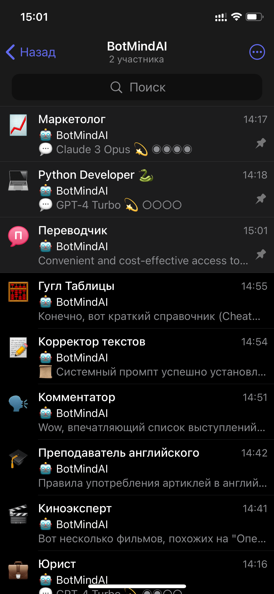
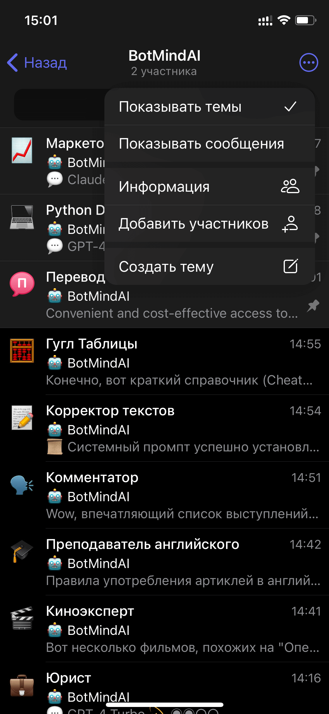
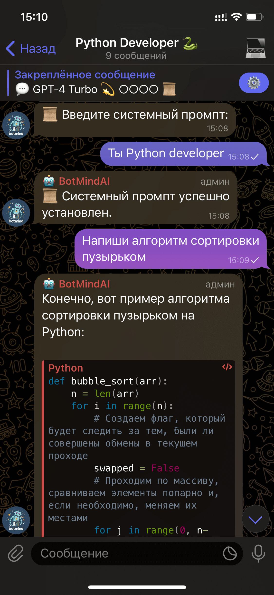

🚀 Получите удобный и выгодный доступ к передовым нейросетям, таким как
ChatGPT,
GPT-3.5-Turbo,
GPT-4,
Claude 3 Haiku,
Claude 3 Sonnet и
Claude 3 Opus, из России через Telegram без необходимости использования VPN,
иностранных
номеров
и
банковских карт.
Преимущества BotMindAI
💰 Без ежемесячной подписки: платите только за использование!
🔥 Управляйте несколькими AI-чатами через Telegram форумы.
💡 Мы впервые применили функционал Telegram форумов для создания приватных чатов с
изолированными темами. Каждая тема представляет собой отдельный персонализированный чат с искусственным
интеллектом, каждый со своими уникальными настройками (моделью, системным промптом и уровнем
креативности) и историей сообщений.



Telegram форум с BotMindAI
🔍 При этом вы можете использовать поиск в Телеграме, чтобы быстро найти нужные
диалоги
внутри своего ИИ форума. Вы найдете нужный разговор мгновенно!
Как начать использовать BotMindAI?
Следуйте следующим простым шагам, которые займут не более 1 минут:
1. Создайте новую частную группу в Telegram.
iOS: Нажмите на иконку с карандашом в верхнем правом углу в
разделе
Чаты > Новая группа.
Android: Нажмите на круглую иконку с карандашом в списке чатов > Новая
группа.
Telegram Desktop: Нажмите на кнопку меню в верхнем левом углу > Новая
группа.
Если вы хотите использовать форум лично, не добавляйте участников. Вы можете задать любое
название и,
при желании, добавить аватарку.
2. Включите функцию "Темы" в группе.
Перейдите в "Настройки группы" и активируйте опцию "Темы". Это необходимо чтобы организовать
отдельные чаты в вашей группе.
3. Добавьте бота BotMindAI в группу.
Вы можете сделать это, перейдя на страницу профиля бота @botmindaibot и
выбрав опцию «Добавить в
группу
или канал». После этого, назначьте бота администратором созданной группы. Это необходимо, чтобы
бот
мог управлять историей чата и отвечать на запросы.
4. Начните диалог с искусственным интеллектом!
🎉 Всё готово! Просто создайте новую тему в
группе и начните общение с ИИ.
Каждая тема будет служить отдельным диалогом, со своими настройками и историей.
Помните, что нейросети доступны внутри каждой темы. Вы можете настроить модель ИИ, системный
промпт и уровень креативности для каждой темы отдельно.
Что умееют нейросети в BotMindAI?
Образование и наука:
Отвечать на вопросы по естественным наукам, истории, географии и т.д.
Помогать в решении домашних заданий школьникам и студентам
Помочь подготовиться к собеседованию и улучшить резюме, провести тестовое собеседование
Делать краткие резюме книг и статей, составлять планы обучения
Помогать с написанием академических работ - курсовых, дипломов, рефератов, решением задач
Работа с текстом:
Создавать уникальный контент для сайтов, блогов и соцсетей
Придумывать эффективные заголовки и тексты для рекламных кампаний
Переводить тексты на разные языки
Переписывать текст в нужном стиле - деловом, художественном и т.д.
Исправлять ошибки в тексте - грамматические, стилистические, логические, фактические
Создавать SEO-описания товаров для маркетплейсов
Писать сценарии, рассказы, стихи по заданным параметрам
Оценивать тон текста, настроение собеседника по диалогу
IT и цифровые навыки:
Консультировать по использованию распространенных приложений - Excel, Word, PowerPoint, Google
Таблицы, Zoom
Объяснять сложные вещи простым языком
Писать, объяснять и оптимизировать программный код
Помогать с ведением и продвижением аккаунтов в социальных сетях.
Давать инструкции по настройке и использованию смартфонов, планшетов, ноутбуков
Креативность и генерация идей:
Предлагать креативные решения для преодоления "синдрома пустого листа"
Симулировать диалоги на заданные темы для практики общения
Генерировать идеи для названий компаний, продуктов, проектов
Стимулировать воображение и генерацию новых идей в процессе диалога
Помогать с придумыванием оригинальных и креативных подарков, сюрпризов, приглашений
Практические советы:
Консультировать по вопросам воспитания и развития детей разных возрастов
Составлять инструкции и руководства по эксплуатации
Давать советы по саморазвитию, тайм-менеджменту, продуктивности
Делиться житейскими советами по общению с людьми, решению конфликтов, поведению в стрессовых
ситуациях
Давать советы по ведению здорового образа жизни - питанию, спорту, режиму сна и отдыха
Давать рекомендации по улучшению финансовой грамотности - контролю бюджета, инвестициям,
накоплениям
Развлечения и хобби:
Давать персональные рекомендации для проведения досуга - фильмы, сериалы, книги, музыка, игры,
кулинарные рецепты
Рассказывать анекдоты, шутки, интересные истории
Играть в простые словесные игры, загадки, викторины
Давать советы по творческим хобби - рисованию, фотографии, рукоделию и т.д.
Делиться лайфхаками для увлекательного отдыха и путешествий
Предлагать оригинальные идеи для вечеринок, праздников, досуга с детьми
Тарифы
Система оплаты Pay As You Go - вы платите только за то, что используете.
Сервисный сбор составляет 20 ₽ в сутки и взимается только в активные дни
использования.
Оплата за запросы к AI моделям: плата рассчитывается из количества токенов,
использованных в каждом запросе.
Что такое токены?
Токены - "частицы" слов.
1000 токенов ~ это примерно 750 слов на английском или 350 слов на русском.
Нейросеть
Средняя стоимость запроса
Входящие токены (цена за 1000 токенов)
Исходящие токены (цена за 1000 токенов)
Минимальный баланс для использования
GPT-4-Turbo
3-7 ₽
1,50 ₽
5,00 ₽
10 ₽
GPT-3.5-Turbo
30-70 копеек
0,10 ₽
0,45 ₽
1 ₽
Claude 3 Opus
7-13 ₽
2,40 ₽
12,00 ₽
20 ₽
Claude 3 Sonnet
2-3 ₽
0,50 ₽
2,50 ₽
10 ₽
Claude 3 Haiku
25-40 копеек
0,07 ₽
0,40 ₽
1 ₽
Входящие токены связаны с информацией, которую вы отправляете боту.
Исходящие токены относятся к ответам бота.
Используемая нейросеть и размер истории сообщений влияют на общее количество токенов.
В мире, где технологии развиваются с невероятной скоростью, важно оставаться в курсе последних новинок в
области нейросетей. BotMindAI - это ваш ключ к самым продвинутым нейросетевым технологиям прямо в
Телеграм!
✨ Вас ожидает:
Уникальный контент, полезные советы и гайды по использованию бота;
Регулярные анонсы новых функций и возможностей бота;
Специальные акции и предложения, доступные только для подписчиков.